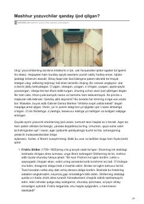

MYBuyuk adiblarning ijodiy jarayonlari va o'ziga xos ish odatlari haqida qiziqarli ma'lumotlar.
Ushbu kitob jahon adabiyotining buyuk namoyandalari bo'lgan yozuvchi va shoirlarning ijodiy jarayonlari, odatlari hamda kun tartiblari haqida hikoya qiladi. Unda ijodkorlarning ilhom olish usullari va ish samaradorligini oshirishga qaratilgan o'ziga xos tartib-qoidalari yoritilgan.